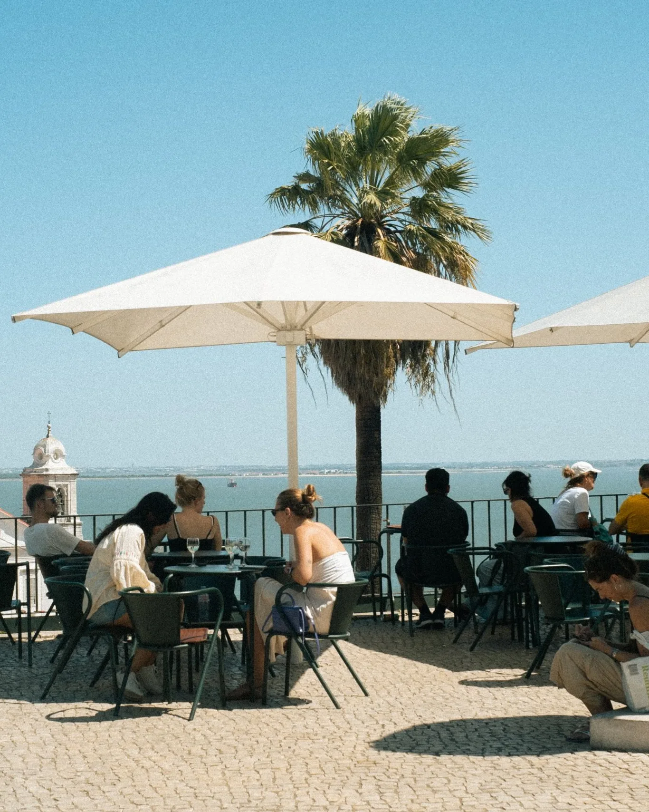
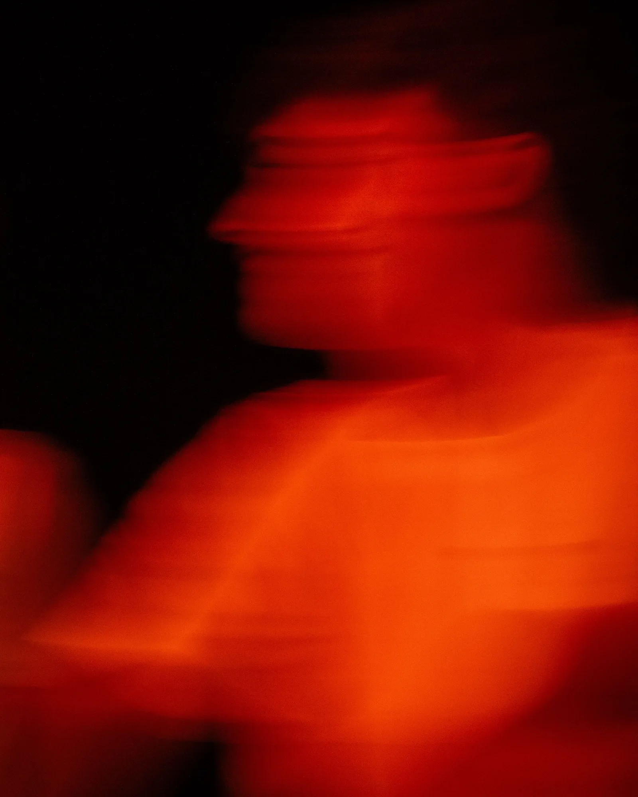

La energía, el ambiente, las historias.
Eso es lo que se queda.
Pide tu presupuesto
Productora de foto, vídeo y edición en Madrid · Restaurantes · Discotecas · Eventos · Locales
SERVICIOS — 03
Lo que hacemos
-
ISO 400 f/2.8 1/200

01Foto
Fotografía de producto, espacio y ambiente. Platos que dan hambre, barras que llaman, salas llenas.
- Sesión en tu local
- Retoque y color
- Formatos para web y redes
-
REC 4K 25p

02Vídeo
Reels, vídeos de marca y cobertura de eventos. Grabamos el ritmo real de tu negocio.
- Reels y TikTok
- Vídeo de marca
- Aftermovie de eventos
-
TIMELINE 00:00:12:04
03Edición
Montaje, color y sonido con ritmo. Convertimos horas de material en segundos que se recuerdan.
- Montaje al beat
- Etalonaje
- Subtítulos y versiones
ISO 400 f/2.8 1/200 REC 4K 25p TIMELINE 00:00:12:04
¿Hablamos de tu local?
Pide tu presupuesto